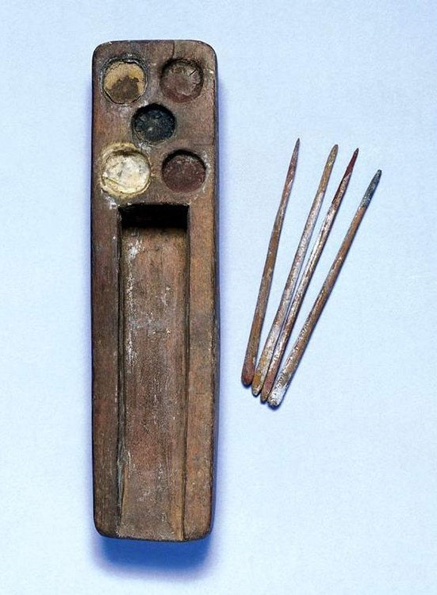

Paintings
When painting surfaces that were painted it is likely that they were prepared with layers of whitewash, a primer-like paint. It has been speculated that minerals were used with an unknown binder (possibly egg tempera). They used six colors when painting: blue, yellow, green, white, red, and black. A small paint box with these six colors was found in the tomb of Tutankhamen.
Color washes were used in painting from 4000 BCE and later. The first uses of blue pigment were found to date back to 3000 BCE. Later they used vegetable dyes in addition to mineral pigments, and were the first in known history to create "lake pigments". A lake pigment is a pigment that is rendered insoluble by mixing it with tannin, metallic salt, or some other compound. This sort of pigment was used for thousands of years following this period, allowing for a wider range of pigments to be created. Other than their contributions to paints and pigments themselves, the Egyptians had a standard style used for thousands of years that consisted of figures shown with heads in profile, bodies facing forward, and feet in profile. Unless gods or children were being illustrated in these paintings, all normal human figures were shown in the same proportions of 18 fists high.